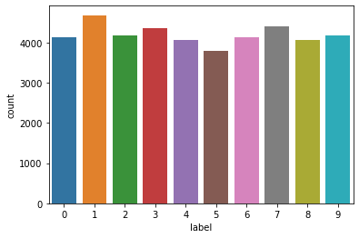

前言 神经网络、深度学习理论一片，基本都可以说道一下，但是真的上手搭建一个神经网络，并将数据处理并进行实践就难到我了。这里记录一下数据处理和神经网络实践。算作学习记录，或者说模板，后续搭建神经网络就参考这个博客，提供学习模板
这里做的是minst手写数字识别的数据集，数据和代码来源主要来自kaggle
正文 数据处理部分 先看目录结构有啥
1 2 3 4 5 6 7 import numpy as np import pandas as pd import osfor dirname, _, filenames in os.walk('/kaggle/input' ): for filename in filenames: print(os.path.join(dirname, filename))
1 2 3 /kaggle/input/digit-recognizer/train.csv /kaggle/input/digit-recognizer/test.csv /kaggle/input/digit-recognizer/sample_submission.csv
读取数据自然是用pandas的read_csv函数
1 2 train_data = pd.read_csv('/kaggle/input/digit-recognizer/train.csv' ) print(train_data)
1 2 3 4 5 6 7 8 9 10 11 12 13 14 15 16 17 18 19 20 21 22 23 24 25 26 27 28 29 30 31 32 33 34 35 36 37 38 39 40 label pixel0 pixel1 pixel2 pixel3 pixel4 pixel5 pixel6 pixel7 \ 0 1 0 0 0 0 0 0 0 0 1 0 0 0 0 0 0 0 0 0 2 1 0 0 0 0 0 0 0 0 3 4 0 0 0 0 0 0 0 0 4 0 0 0 0 0 0 0 0 0 ... ... ... ... ... ... ... ... ... ... 41995 0 0 0 0 0 0 0 0 0 41996 1 0 0 0 0 0 0 0 0 41997 7 0 0 0 0 0 0 0 0 41998 6 0 0 0 0 0 0 0 0 41999 9 0 0 0 0 0 0 0 0 pixel8 ... pixel774 pixel775 pixel776 pixel777 pixel778 \ 0 0 ... 0 0 0 0 0 1 0 ... 0 0 0 0 0 2 0 ... 0 0 0 0 0 3 0 ... 0 0 0 0 0 4 0 ... 0 0 0 0 0 ... ... ... ... ... ... ... ... 41995 0 ... 0 0 0 0 0 41996 0 ... 0 0 0 0 0 41997 0 ... 0 0 0 0 0 41998 0 ... 0 0 0 0 0 41999 0 ... 0 0 0 0 0 pixel779 pixel780 pixel781 pixel782 pixel783 0 0 0 0 0 0 1 0 0 0 0 0 2 0 0 0 0 0 3 0 0 0 0 0 4 0 0 0 0 0 ... ... ... ... ... ... 41995 0 0 0 0 0 41996 0 0 0 0 0 41997 0 0 0 0 0 41998 0 0 0 0 0 41999 0 0 0 0 0 [42000 rows x 785 columns]
取出label，也就是标记，并做一下统计，用sns的countplot画一下统计图
1 2 3 4 import seaborn as snsY_train = train_data['label' ] sns.countplot(Y_train) Y_train.value_counts()
1 2 3 4 5 6 7 8 9 10 11 1 4684 7 4401 3 4351 9 4188 2 4177 6 4137 0 4132 4 4072 8 4063 5 3795 Name: label, dtype: int64

取数据部分，就是把数据裁掉label列
1 2 X_train = train_data.drop(labels=['label' ], axis=1 ) print(X_train)
1 2 3 4 5 6 7 8 9 10 11 12 13 14 15 16 17 18 19 20 21 22 23 24 25 26 27 28 29 30 31 32 33 34 35 36 37 38 39 40 pixel0 pixel1 pixel2 pixel3 pixel4 pixel5 pixel6 pixel7 pixel8 \ 0 0 0 0 0 0 0 0 0 0 1 0 0 0 0 0 0 0 0 0 2 0 0 0 0 0 0 0 0 0 3 0 0 0 0 0 0 0 0 0 4 0 0 0 0 0 0 0 0 0 ... ... ... ... ... ... ... ... ... ... 41995 0 0 0 0 0 0 0 0 0 41996 0 0 0 0 0 0 0 0 0 41997 0 0 0 0 0 0 0 0 0 41998 0 0 0 0 0 0 0 0 0 41999 0 0 0 0 0 0 0 0 0 pixel9 ... pixel774 pixel775 pixel776 pixel777 pixel778 \ 0 0 ... 0 0 0 0 0 1 0 ... 0 0 0 0 0 2 0 ... 0 0 0 0 0 3 0 ... 0 0 0 0 0 4 0 ... 0 0 0 0 0 ... ... ... ... ... ... ... ... 41995 0 ... 0 0 0 0 0 41996 0 ... 0 0 0 0 0 41997 0 ... 0 0 0 0 0 41998 0 ... 0 0 0 0 0 41999 0 ... 0 0 0 0 0 pixel779 pixel780 pixel781 pixel782 pixel783 0 0 0 0 0 0 1 0 0 0 0 0 2 0 0 0 0 0 3 0 0 0 0 0 4 0 0 0 0 0 ... ... ... ... ... ... 41995 0 0 0 0 0 41996 0 0 0 0 0 41997 0 0 0 0 0 41998 0 0 0 0 0 41999 0 0 0 0 0 [42000 rows x 784 columns]
数据取出来了，删除原变量清理空间
处理label为训练需要的，由于输出为10个数字，所以转成[0, 1, …, 0]的形式，比较好输出
1 2 3 4 import tensorflow as tfprint(Y_train) Y_train = tf.keras.utils.to_categorical(Y_train, num_classes = 10 ) print(Y_train)
1 2 3 4 5 6 7 8 9 10 11 12 13 14 15 16 17 18 19 0 1 1 0 2 1 3 4 4 0 .. 41995 0 41996 1 41997 7 41998 6 41999 9 Name: label, Length: 42000, dtype: int64 [[0. 1. 0. ... 0. 0. 0.] [1. 0. 0. ... 0. 0. 0.] [0. 1. 0. ... 0. 0. 0.] ... [0. 0. 0. ... 1. 0. 0.] [0. 0. 0. ... 0. 0. 0.] [0. 0. 0. ... 0. 0. 1.]]
搭建神经网络 全连接神经网络 第一步先用最简单的刚学会的全连接神经网络进行搭建
1 2 3 4 5 6 7 tpu = tf.distribute.cluster_resolver.TPUClusterResolver() tf.config.experimental_connect_to_cluster(tpu) tf.tpu.experimental.initialize_tpu_system(tpu) tpu_strategy = tf.distribute.experimental.TPUStrategy(tpu)
全连接神经网络使用tensorflow上层封装的keras很方便的搭建
由于数据为784像素，搭建一个$784 \times 300 \times 10$的三层全连接神经网络 激活函数用sigmoid函数，输出层不使用激活函数 训练算法为随机梯度下降算法SDG 损失函数使用最常见的方差，也就是MSE函数 评估函数，就是每次训练给自己看的正确率，使用accuracy 没有让定学习率，是keras自定义了一个学习率，想改可以更改，仿照下面示例1 2 lr = tf.keras.get_value(model.optimizer.lr) tf.keras.set_value(model.optimizer.lr, lr * 0.1 )
搭建神经网络
1 2 3 4 5 6 7 8 9 10 11 12 13 with tpu_strategy.scope(): model = tf.keras.Sequential([ tf.keras.layers.Dense(784 , activation='sigmoid' , input_shape=(784 ,)), tf.keras.layers.Dense(300 , activation='sigmoid' ), tf.keras.layers.Dense(10 )]) model.compile (optimizer='sgd' , loss='mse' , metrics=['accuracy' ])
开始训练，训练10轮，不使用batch_size，也就是一个数据训练一次，使用就是多少个数据一起计算损失进行训练
1 model.fit(X_train, Y_train, epochs=10 )
1 2 3 4 5 6 7 8 9 10 11 12 13 14 15 16 17 18 19 20 21 Train on 42000 samples Epoch 1/10 42000/42000 [==============================] - 19s 445us/sample - loss: 0.0662 - mse: 0.0662 Epoch 2/10 42000/42000 [==============================] - 15s 358us/sample - loss: 0.0450 - mse: 0.0450 Epoch 3/10 42000/42000 [==============================] - 15s 363us/sample - loss: 0.0389 - mse: 0.0389 Epoch 4/10 42000/42000 [==============================] - 15s 361us/sample - loss: 0.0352 - mse: 0.0352 Epoch 5/10 42000/42000 [==============================] - 15s 368us/sample - loss: 0.0327 - mse: 0.0327 Epoch 6/10 42000/42000 [==============================] - 15s 365us/sample - loss: 0.0307 - mse: 0.0307 Epoch 7/10 42000/42000 [==============================] - 15s 360us/sample - loss: 0.0290 - mse: 0.0290 Epoch 8/10 42000/42000 [==============================] - 15s 361us/sample - loss: 0.0277 - mse: 0.0277 Epoch 9/10 42000/42000 [==============================] - 16s 382us/sample - loss: 0.0265 - mse: 0.0265 Epoch 10/10 42000/42000 [==============================] - 15s 360us/sample - loss: 0.0255 - mse: 0.0255
使用训练好的模型进行预测
1 2 3 X_test = pd.read_csv('/kaggle/input/digit-recognizer/test.csv' ) result = model.predict(X_test) print(result)
1 2 3 4 5 6 7 8 9 10 11 12 13 [[ 0.01005008 -0.13368271 1.028762 ... 0.09499414 -0.03820078 0.07303742] [ 0.91421854 0.0619337 -0.0153799 ... -0.02384852 0.00949888 -0.00644076] [ 0.15733594 -0.18536185 0.00183494 ... 0.17828196 0.10834856 0.5332101 ] ... [ 0.08116924 0.05367666 -0.11228251 ... -0.04407992 0.04734693 -0.00913614] [ 0.12493088 0.15927482 -0.19310981 ... 0.01099574 0.01244311 0.7635241 ] [ 0.03526025 -0.12380172 0.8869271 ... 0.00314465 -0.02688907 0.19765595]]
这搞出来的也不能用啊，我们前面将标签转成[1, 0, .., 0]，所以最大的那个数所在位置就是预测值，使用argmax进行处理
1 2 tmp = np.argmax(result, axis=1 ) print(tmp)
结果提交预测正确率为91.085%，很开心，初步使用神经网络完成
几个参数修改对比 输出层加上sigmoid激活函数，正确率降低到81.285%，猜测限制了发挥 输出层使用relu函数，正确率比sigmoid函数高一点，到达85.014%，应该同样限制了发挥吧 所有层使用relu函数，预测结果直接有问题，relu函数导致结果全部为0，所以无法正常训练根据网上查到的信息，主要原因是输入没有做归一化，权值初始化有问题，训练过程出现权值过大或者过小，通过relu函数变成0，训练过程权值无法调整到合适的值导致无法正常训练 隐藏层改为100个神经元，预测结果和300差别不大，都是91.000% 神经网络改为$784 \times 150 \times 150 \times 10$，正确率达到86.257%，暂时未测试是否是训练轮数不够导致影响sigmoid函数作为激活函数，在反向传播算法中，传播越远，梯度下降越难。由于传播使用的前一层的导数乘积，sigmoid函数导数最大为$\frac{1}{4}$，所以会下降更难，一般全连接神经网络只有三层 卷积神经网络 1 2 3 4 5 6 7 8 9 10 11 12 13 14 15 16 17 18 19 20 21 22 23 24 25 26 27 28 29 30 31 32 with tpu_strategy.scope(): model = tf.keras.Sequential() model.add(tf.keras.layers.Conv2D(filters = 32 , kernel_size = (5 ,5 ),padding = 'Same' , activation ='relu' , input_shape = (28 ,28 ,1 ))) model.add(tf.keras.layers.Conv2D(filters = 32 , kernel_size = (5 ,5 ),padding = 'Same' , activation ='relu' )) model.add(tf.keras.layers.MaxPool2D(pool_size=(2 ,2 ))) model.add(tf.keras.layers.Dropout(0.25 )) model.add(tf.keras.layers.Conv2D(filters = 64 , kernel_size = (3 ,3 ),padding = 'Same' , activation ='relu' )) model.add(tf.keras.layers.Conv2D(filters = 64 , kernel_size = (3 ,3 ),padding = 'Same' , activation ='relu' )) model.add(tf.keras.layers.MaxPool2D(pool_size=(2 ,2 ), strides=(2 ,2 ))) model.add(tf.keras.layers.Dropout(0.25 )) model.add(tf.keras.layers.Flatten()) model.add(tf.keras.layers.Dense(256 , activation = "relu" )) model.add(tf.keras.layers.Dropout(0.5 )) model.add(tf.keras.layers.Dense(10 )) optimizer = tf.keras.optimizers.RMSprop(lr=0.001 , rho=0.9 , epsilon=1e-08 , decay=0.0 ) model.compile (optimizer = optimizer , loss = "mse" , metrics=["accuracy" ]) model.fit(X_train, Y_train, epochs=4 , batch_size = 42 )
1 2 3 4 5 6 7 8 Epoch 1/4 1000/1000 [==============================] - 17s 17ms/step - accuracy: 0.8298 - loss: 0.7533 Epoch 2/4 1000/1000 [==============================] - 18s 18ms/step - accuracy: 0.9645 - loss: 0.0147 Epoch 3/4 1000/1000 [==============================] - 18s 18ms/step - accuracy: 0.9687 - loss: 0.0128 Epoch 4/4 1000/1000 [==============================] - 17s 17ms/step - accuracy: 0.9705 - loss: 0.0122